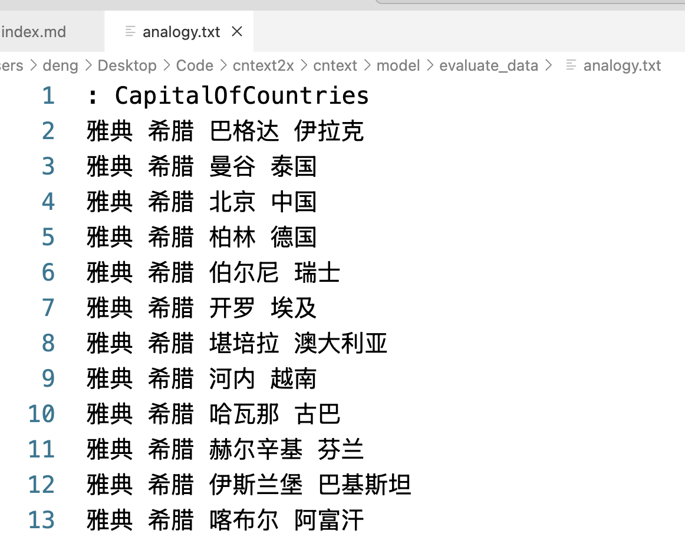

中文语料预训练模型列表， 使用 cntext2.x 训练出的预训练语言模型， 主要分 GloVe 和 Word2Vec 两种。
一、中文预训练模型
使用 cntext2.x 训练得到的中文预训练模型资源，汇总如下
对中文语料进行了近义测试和类比测试， 其中斯皮尔曼秩系数(Spearman’s Rank Coeficient) 取值[-1,1], 取值越大表示模型越符合人类的认知。
类比测试有首都国家（CapitalOfCountries）、省会省份（CityInProvince）、家人关系（FamilyRelationship）、社会科学(管理、经济、心理等 SocialScience) 的类别准确率测试。
二、cntext2.x
cntext2.x 是中英文文本分析库，内置有多重词典和常用函数。 常见的文本分析代码行数在数十行，而 cntext2.x 力求将代码量控制在 2~5 行。
2.1 训练模型
训练模型步骤:
- 构建语料
- 训练模型
import cntext as ct
# 大邓Mac 96G内存， 12核使用的代码。
w2v = ct.Word2Vec(corpus_file='留言板.txt',
vector_size=200,
window_size=15,
lang='chinese',
chunksize=100000,
min_count=5)
Run
Mac(Linux) System, Enable Parallel Processing
Cache output/renmin_board_cache.txt Not Found or Empty, Preprocessing Corpus
Reading Preprocessed Corpus from output/renmin_board_cache.txt
Start Training Word2Vec
Word2Vec Training Cost 2692 s.
Output Saved To: output/留言板-Word2Vec.200.15.bin
cntext2.x 训练模型的教程可参考
- 使用 1 亿 B 站用户签名训练 word2vec 词向量
- 使用 1985 年-2025 年专利申请摘要训练 Word2Vec 模型
- 使用 MD&A2001-2023 语料训练 Word2Vec/GloVe 模型
- 使用裁判文书语料训练 GloVe 词向量
- 使用 5000w 专利申请数据集按年份(按省份)训练词向量
- 使用人民网领导留言板语料训练 Word2Vec 模型
2.2 评估模型
使用近义法和类比法， 判断模型的表现。详情可查看文档
近义测试
cntext2.x 内置 537 条近义实验数据， 可直接使用。

ct.evaluate_similarity(w2v)
Run
近义测试: similarity.txt
/Library/Frameworks/Python.framework/Versions/3.12/lib/python3.12/site-packages/cntext/model/evaluate_data/similarity.txt
评估结果：
+----------+------------+----------------------------+
| 发现词语 | 未发现词语 | Spearman's Rank Coeficient |
+----------+------------+----------------------------+
| 426 | 111 | 0.45 |
+----------+------------+----------------------------+
Spearman’s Rank Coeficient 系数取值[-1, 1], 取值越大， 说明模型表现越好。
类比测试
- 雅典之于希腊，似如巴格达之于伊拉克。
- 哈尔滨之于黑龙江，似如长沙之于湖南。
- 国王之于王后，似如男人之于女人。

cntext2.x 内置 1194 条类比， 格式如下

ct.evaluate_analogy(wv)
Run
类比测试: analogy.txt
/Library/Frameworks/Python.framework/Versions/3.12/lib/python3.12/site-packages/cntext/model/evaluate_data/analogy.txt
Processing Analogy Test: 100%|██████████████| 1198/1198 [00:11<00:00, 99.91it/s]
评估结果：
+--------------------+----------+------------+------------+----------+
| Category | 发现词语 | 未发现词语 | 准确率 (%) | 平均排名 |
+--------------------+----------+------------+------------+----------+
| CapitalOfCountries | 238 | 439 | 19.33 | 2.74 |
| CityInProvince | 175 | 0 | 100.00 | 1.01 |
| FamilyRelationship | 272 | 0 | 61.40 | 1.96 |
| SocialScience | 10 | 60 | 20.00 | 1.50 |
+--------------------+----------+------------+------------+----------+
- CapitalOfCountries 留言板语料在此项表现较差， 应该是语料中常见国家首度的提及较少。
- CityInProvince 留言板语料在此项表现如此优异，应该是语料中省份、省会地域词经常出现。
- FamilyRelationship 留言板中应该少不了家长里短， 所以此项准确率还可以。 以年报 MD&A为例，此处准确率只有 10%, 而豆瓣影评该处准确率高达 92.65%。
- SocialScience 留言板语料在此项表现一般， 应该是语料中常见的社会科学词语提及较少。
整体而言，语料训练的效果很不错，抓住了数据场景的独特性语义。
三、模型使用
3.1 读取模型
import cntext ct
w2v = ct.load_w2v('output/留言板-Word2Vec.200.15.bin')
print('维度数:', w2v.vector_size)
print('词汇量: ', len(w2v))
w2v
Run
Loading output/留言板-Word2Vec.200.15.bin...
维度数: 200
词汇量: 1050245
<gensim.models.keyedvectors.KeyedVectors at 0x328d737a0>
3.2 KeyedVectors 的操作方法(或属性)
| 方法 | 描述 |
|---|---|
| KeyedVectors.index_to_key | 获取词汇表中的所有单词。 |
| KeyedVectors.key_to_index | 获取单词到索引的映射。 |
| KeyedVectors.vector_size | 获取 GloVe 模型中任意词向量的维度。 |
| KeyedVectors.get_vector(word) | 获取给定单词的词向量。 |
| KeyedVectors.similar_by_word(word, topn=10) | 获取某词语最相似的 10 个近义词。 |
| KeyedVectors.similar_by_vector(vector, topn=10) | 获取词向量最相似的 10 个近义词。 |
| … | … |
3.3 查看词表
因为词表有 1050245 个词， 为了方便，这里只显示前 20 个词
# 词表带顺序的
list(w2v.index_to_key)[:20]
Run
['问题',
'进行',
'您好',
'工作',
'小区',
'反映',
'领导',
'情况',
'相关',
'留言',
'没有',
'感谢您',
'网友',
'业主',
'办理',
'公司',
'建设',
'回复',
'支持',
'部门']
查看词表映射
w2v.key_to_index
Run
{'问题': 0,
'进行': 1,
'您好': 2,
'工作': 3,
'小区': 4,
'反映': 5,
'领导': 6,
...
'连续': 995,
'稳定': 996,
'市住建局': 997,
'降低': 998,
'会同': 999,
...}
3.4 获取某词的向量
查找某词对应的词向量
# w2v['问题']
w2v.get_vector('问题')
Run
array([-6.2813835 , 1.5916584 , -0.48086444, -2.6446412 , 10.031776 ,
-0.11915778, -5.039283 , -2.1107564 , 1.1351422 , -2.881387 ,
4.2890835 , -1.1337206 , 3.7850847 , -3.640467 , -0.96282107,
...
...
1.1314462 , -2.5386178 , -2.3993561 , -2.0407596 , 0.95457 ,
3.03732 , -2.033116 , -0.20390491, 3.5368073 , 6.5452943 ,
2.1186016 , 0.79572505, 2.5855987 , 0.88565165, -1.812104 ],
dtype=float32)
受限于篇幅，这里显示词向量的部分数值。
需要注意，如果查询的词不存在于模型词表，则会出现报错。例如
word = '这是一个不存在的词'
w2v.get_vector(word)
Run
---------------------------------------------------------------------------
KeyError Traceback (most recent call last)
Cell In[130], line 2
1 word = '这是一个不存在的词'
----> 2 w2v.wv.get_vector(word)
File /Library/Frameworks/Python.framework/Versions/3.11/lib/python3.11/site-packages/gensim/models/keyedvectors.py:446, in KeyedVectors.get_vector(self, key, norm)
422 def get_vector(self, key, norm=False):
423 """Get the key's vector, as a 1D numpy array.
424
425 Parameters
(...)
444
445 """
--> 446 index = self.get_index(key)
447 if norm:
448 self.fill_norms()
File /Library/Frameworks/Python.framework/Versions/3.11/lib/python3.11/site-packages/gensim/models/keyedvectors.py:420, in KeyedVectors.get_index(self, key, default)
418 return default
419 else:
--> 420 raise KeyError(f"Key '{key}' not present")
KeyError: "Key '这是一个不存在的词' not present"
3.5 近义词
根据词语查寻近义词，返回最相似的 10 个词
w2v.similar_by_word('问题', topn=10)
Run
[('情况', 0.6178732514381409),
('现象', 0.5385990142822266),
('此类情况', 0.418301522731781),
('留言', 0.4179410934448242),
('一事', 0.40703579783439636),
('事项', 0.39551448822021484),
('事情', 0.3860214948654175),
('情形', 0.38478103280067444),
('事件', 0.36725184321403503),
('现像', 0.3665226995944977)]
根据语义向量查寻近义词，返回最相似的 10 个词
question_vector = w2v.get_vector('问题')
w2v.similar_by_word(question_vector, topn=10)
Run
[('问题', 1.0),
('情况', 0.6178732514381409),
('现象', 0.5385990142822266),
('此类情况', 0.4183014929294586),
('留言', 0.4179410934448242),
('一事', 0.40703579783439636),
('事项', 0.39551448822021484),
('事情', 0.3860214948654175),
('情形', 0.38478103280067444),
('事件', 0.36725184321403503)]
3.6 计算多个词的中心向量
我们可以计算「经济」、「建设」、「发展」的中心向量 eco_vector。 并试图寻找中心向量 eco_vector 的最相似的 10 个词。
eco_vector = ct.semantic_centroid(wv=w2v,
words=['经济', '建设', '发展'])
# 寻找 eco_vector 语义最相似的10个词
w2v.similar_by_vector(eco_vector, topn=10)
Run
[('发展', 0.8317984938621521),
('建设', 0.7508440613746643),
('经济', 0.6406075954437256),
('经济社会发展', 0.6385446786880493),
('发展壮大', 0.6317417621612549),
('化发展', 0.5961641073226929),
('大力发展', 0.585274338722229),
('经济腾飞', 0.5823679566383362),
('产业', 0.5820372700691223),
('高质量发展', 0.5803337097167969)]
语义捕捉的很准。
3.7 概念轴
男性概念向量由多个男性词的向量加总求均值得到，女性概念向量算法类似。当性质或方向明显相反的两个概念向量相减， 得到的新的向量，我们可以称之为**概念轴向量 Concept Axis**。
将几个城市词的词向量在[冷热概念轴向量]进行投影，得到的数值越大，表示越接近于 c_words2，越寒冷。
import cntext as ct
# 数值越大，表示越接近于c_words2，越寒冷。
ct.sematic_projection(wv=w2v,
words=['杭州', '哈尔滨', '广州', '潍坊'],
poswords=['寒冷', '冰雪'],
negwords=['炎热', '酷暑'],
)
Run
[('杭州', -2.52), ('广州', -2.06), ('潍坊', 2.18), ('哈尔滨', 2.78)]
投影体现出城市的冷热， 体现了语言模型中蕴含着人类的认知(文化、偏见、记忆)。 类似的概念轴，
- 尺寸(大, 小)
- 湿度(干燥,潮湿)
- 财富(富裕, 贫穷)
- 性别(男, 女)
- 等
其实任意概念的向量也可看做概念轴，即该概念向量与 0 向量相减。只不过两组性质方向相反的方式得到的概念轴， 在语义上更稳定。